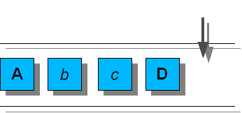

javax.swing.undo.AbstractUndoableEdit
javax.swing.undo.CompoundEdit
javax.swing.undo.UndoManager
javax.swing.undo.AbstractUndoableEdit
javax.swing.undo.CompoundEdit
javax.swing.undo.UndoManager
|
JavaTM Platform Standard Ed. 6 |
|||||||||
| 앞의 클래스 다음의 클래스 | 프레임 있어 프레임 없음 | |||||||||
| 개요: 상자 | 필드 | 생성자 | 메소드 | 상세: 필드 | 생성자 | 메소드 | |||||||||
java.lang.Object
public class UndoManager
UndoManager 는,UndoableEdit 의 리스트를 관리해, 편집 결과를 선택해 그 내용을 바탕으로 되돌리거나 재실행하거나 할 수 있습니다. UndoManager 에 편집 결과를 추가하는 방법은 2 서로 통과합니다. 1개(살)은 addEdit 메소드를 사용해 직접 편집 결과를 추가하는 방법, 하나 더는 UndoableEditListener 를 지원하는 Bean 에 UndoManager 를 추가하는 방법입니다. 다음의 코드예에서는,UndoManager 를 작성해,UndoableEditListener 로서 JTextField 에 추가할 수가 있습니다.
UndoManager undoManager = new UndoManager(); JTextField tf = ...; tf.getDocument(). addUndoableEditListener(undoManager);
UndoManager 는, 편집 결과의 순서 첨부 리스트와 이 리스트내의 다음의 편집 결과의 인덱스를 관리합니다. 다음의 편집 결과의 인덱스는, 현재의 편집 결과의 리스트의 사이즈인가,undo 가 불려 가고 있는 경우는 전회 삭제된 중대한 편집 내용의 인덱스가 됩니다. undo 가 불려 가면(자), 다음의 편집 결과의 인덱스로부터 전회의 중대한 편집 결과까지의 모든 편집 결과가 역순서에 삭제됩니다. 예를 들어,A b c D 라고 하는 편집 결과로부터 완성되는 UndoManager 가 있다고 합니다. 알파벳의 대문자로 나타내진 편집 결과 (굵은 글씨)는 중대한 편집 결과, 알파벳의 소문자로 나타내진 편집 결과 (이탤릭)는 작은 편집 결과입니다.
|  |
| 그림 1 |
그림 1 과 같이,D 가 추가되었을 경우, 다음의 편집 결과의 인덱스는 4 가 됩니다. undo 를 호출하면(자),D 에 대해서 undo 가 불려 가 다음의 편집 결과의 인덱스가 3 이 됩니다 (c 를 편집). 다음의 그림을 참조해 주세요.

|
| 그림 2 |
전회의 중대한 편집 결과는 A 입니다. undo 를 재차 호출하면(자),c,b, 및 A 에 대해서, 이 차례로 undo 가 불려 가 다음의 편집 결과의 인덱스가 0 이 됩니다. 다음의 그림을 참조해 주세요.

|
| 그림 3 |
redo 를 호출하면(자), 다음의 편집 결과의 인덱스로부터 다음의 중대한 편집 결과 (리스트의 말미)까지의 모든 편집 결과에 대해서 redo 가 불려 갑니다. 방금전의 예의 계속으로,redo 를 호출했을 경우,A,b, 및 c 에 대해서, 이 차례로 redo 가 불려 갑니다. 또, 다음의 편집 결과의 인덱스가 3 으로 설정됩니다 (그림 2 를 참조).
UndoManager 에 편집 결과를 추가하면(자), 다음의 편집 결과의 인덱스로부터 리스트의 말미까지의 모든 편집 결과가 삭제됩니다. 방금전의 예의 계속으로, 새로운 편집 결과 e 를 추가하면(자), 편집 결과 D 에 대해서 die 가 불려 간 뒤, 이 편집 결과가 리스트로부터 삭제됩니다. c 가 다음의 편집 결과에 짜넣어지지 않은 경우 (c. addEdit(e) 의 반환값이 true 의 경우), 또는 c 가 다음의 편집 결과로 옮겨놓을 수 있는 경우 (e. replaceEdit(c) 의 반환값이 true 의 경우), 다음의 그림과 같이 c 의 뒤로 새로운 편집 결과가 추가됩니다.

|
| 그림 4 |
UndoManager 에 대해서 end 가 불려 가면(자), 모든 UndoableEdit 메소드에 대해서 슈퍼 클래스의 동작이 적용됩니다. 이 동작의 상세한 것에 대하여는,CompoundEdit 를 참조해 주세요.
이 클래스는, 다른 Swing 의 클래스와는 달라, thread에 대해서 안전합니다.
경고: 이 클래스의 직렬화 된 객체는, 향후의 Swing 릴리스와 호환은 아니게 될 예정입니다. 현재의 직렬화의 지원는, 단기간의 운용이나, 같은 버젼의 Swing 를 실행하는 어플리케이션간의 RMI 에 적절하고 있습니다. JDK Version 1.4 이후, 모든 JavaBeans™ 의 장기간의 운용 지원는,java.beans 패키지에 추가되고 있습니다. 자세한 것은,XMLEncoder 를 참조해 주세요.
| 필드의 개요 |
|---|
| 클래스 javax.swing.undo. CompoundEdit 로부터 상속된 필드 |
|---|
edits |
| 클래스 javax.swing.undo. AbstractUndoableEdit 로부터 상속된 필드 |
|---|
RedoName , UndoName |
| 생성자 의 개요 | |
|---|---|
UndoManager ()
새로운 UndoManager 를 작성합니다. |
|
| 메소드의 개요 | |
|---|---|
boolean |
addEdit (UndoableEdit anEdit)
가능하면, 이 UndoManager 에 UndoableEdit 를 추가합니다. |
boolean |
canRedo ()
편집 결과를 재실행할 수 있는 경우는 true 를 돌려줍니다. |
boolean |
canUndo ()
편집 결과를 취소할 수 있는 경우는 true 를 돌려줍니다. |
boolean |
canUndoOrRedo ()
undo 또는 redo 를 호출할 수 있는 경우는 true 를 돌려줍니다. |
void |
discardAllEdits ()
undo 매니저를 비워, 각 편 집결과의 진행시에 die 메세지를 보냅니다. |
protected UndoableEdit |
editToBeRedone ()
redo 가 불려 갔을 경우에 재실행하는 다음의 중대한 편집 결과를 돌려줍니다. |
protected UndoableEdit |
editToBeUndone ()
undo 가 불려 갔을 경우에, 바탕으로 되돌리는 다음의 중대한 편집 결과를 돌려줍니다. |
void |
end ()
이 UndoManager 를 표준의 CompoundEdit 로 합니다. |
int |
getLimit ()
이 UndoManager 가 보관 유지하는 편집 결과의 최대수를 돌려줍니다. |
String |
getRedoPresentationName ()
이 편집 결과의 재실행 가능한 형식의 설명을 돌려줍니다. |
String |
getUndoOrRedoPresentationName ()
getUndoPresentationName 또는 getRedoPresentationName 를 돌려주는 편리한 메소드입니다. |
String |
getUndoPresentationName ()
이 편집 결과의 취소해 가능한 형식의 설명을 돌려줍니다. |
void |
redo ()
편집 결과를 선택해 재실행합니다. |
protected void |
redoTo (UndoableEdit edit)
다음의 편집 결과의 인덱스로부터 edit 까지의 모든 변경을 재실행해, 거기에 합해 다음의 편집 결과의 인덱스를 갱신합니다. |
void |
setLimit (int l)
이 UndoManager 가 보관 유지하는 편집 결과의 최대수를 설정합니다. |
String |
toString ()
이 객체의 프로퍼티을 표시 및 식별하는 캐릭터 라인을 돌려줍니다. |
protected void |
trimEdits (int from,
int to)
지정된 범위내의 편집 결과를 삭제합니다. |
protected void |
trimForLimit ()
큐에 들어간 편집 결과의 수를, 다음의 편집 결과의 인덱스의 중앙의 사이즈 한도의 범위에까지 줄입니다. |
void |
undo ()
편집 결과를 선택해 취소합니다. |
void |
undoableEditHappened (UndoableEditEvent e)
UndoableEditListener 메소드입니다. |
void |
undoOrRedo ()
undo 또는 redo 의 어느 쪽인지 1 개를 호출하는 편리한 메소드입니다. |
protected void |
undoTo (UndoableEdit edit)
다음의 편집 결과의 인덱스로부터 edit 까지의 모든 변경을 취소해, 게다가 합해 다음의 편집 결과의 인덱스를 갱신합니다. |
| 클래스 javax.swing.undo. CompoundEdit 로부터 상속된 메소드 |
|---|
die , getPresentationName , isInProgress , isSignificant , lastEdit |
| 클래스 javax.swing.undo. AbstractUndoableEdit 로부터 상속된 메소드 |
|---|
replaceEdit |
| 클래스 java.lang. Object 로부터 상속된 메소드 |
|---|
clone , equals , finalize , getClass , hashCode , notify , notifyAll , wait , wait , wait |
| 생성자 의 상세 |
|---|
public UndoManager()
UndoManager 를 작성합니다.
| 메소드의 상세 |
|---|
public int getLimit()
UndoManager 가 보관 유지하는 편집 결과의 최대수를 돌려줍니다. 0 보다 작은 값은, 편집 결과의 수에 제한이 없는 것을 나타냅니다.
UndoManager 가 보관 유지하는 편집 결과의 최대수addEdit(javax.swing.undo.UndoableEdit) ,
setLimit(int) public void discardAllEdits()
die 메세지를 보냅니다.
AbstractUndoableEdit.die() protected void trimForLimit()
protected void trimEdits(int from,
int to)
die 가 불려 가 편집 결과의 리스트로부터 이러한 편집 결과가 삭제됩니다. from 가 to 보다 큰 경우는, 아무것도 실시하지 않습니다.
from - 삭제하는 최소의 인덱스to - 삭제하는 최대의 인덱스public void setLimit(int l)
UndoManager 가 보관 유지하는 편집 결과의 최대수를 설정합니다. 0 보다 작은 값은, 편집 결과의 수에 제한이 없는 것을 나타냅니다. 편집 결과를 파기해 이 제한수를 줄일 필요가 있는 경우는, 이러한 편집 결과에 대해서, 추가시와 역의 순서로 die 를 호출합니다. 디폴트는 100 입니다.
l - 새로운 제한치
RuntimeException - 이 UndoManager 가 실행중이 아닌 경우 (end 가 불려 갔을 경우)CompoundEdit.isInProgress() ,
end() ,
addEdit(javax.swing.undo.UndoableEdit) ,
getLimit() protected UndoableEdit editToBeUndone()
undo 가 불려 갔을 경우에, 바탕으로 되돌리는 다음의 중대한 편집 결과를 돌려줍니다. 이 메소드는, 바탕으로 되돌리는 편집 결과가 없는 경우는 null 를 돌려줍니다.
protected UndoableEdit editToBeRedone()
redo 가 불려 갔을 경우에 재실행하는 다음의 중대한 편집 결과를 돌려줍니다. 이 메소드는, 재실행하는 편집 결과가 없는 경우는 null 를 돌려줍니다.
protected void undoTo(UndoableEdit edit)
throws CannotUndoException
edit 까지의 모든 변경을 취소해, 게다가 합해 다음의 편집 결과의 인덱스를 갱신합니다.
CannotUndoException - 편집 결과안에
O1：code 태그다 모습CannotUndoException 를 throw 하는 것이 있는 경우
protected void redoTo(UndoableEdit edit)
throws CannotRedoException
edit 까지의 모든 변경을 재실행해, 거기에 합해 다음의 편집 결과의 인덱스를 갱신합니다.
CannotRedoException - 편집 결과안에
O2：code 태그다 모습CannotRedoException 를 throw 하는 것이 있는 경우
public void undoOrRedo()
throws CannotRedoException ,
CannotUndoException
undo 또는 redo 의 어느 쪽인지 1 개를 호출하는 편리한 메소드입니다. 삭제된 편집 결과가 있는 경우 (다음의 편집 결과의 인덱스가 편집 결과의 리스트의 길이를 나타내는 값보다 작아지고 있는 경우)는 redo, 그렇지 않은 경우는 undo 를 호출합니다.
CannotUndoException - 편집 결과안에
O1：code 태그다 모습CannotUndoException 를 throw 하는 것이 있는 경우
CannotRedoException - 편집 결과안에
O2：code 태그다 모습CannotRedoException 를 throw 하는 것이 있는 경우canUndoOrRedo() ,
getUndoOrRedoPresentationName() public boolean canUndoOrRedo()
undo 또는 redo 를 호출할 수 있는 경우는 true 를 돌려줍니다.
canUndoOrRedo 의 호출이 유효한 경우는 trueundoOrRedo()
public void undo()
throws CannotUndoException
end 가 불려 갔을 경우, 이 메소드는 슈퍼 클래스를 호출합니다. 그 이외의 경우, 이 메소드는, 다음의 편집 결과의 인덱스로부터 전회의 중대한 편집 결과까지의 모든 편집 결과에 대해서 undo 를 호출합니다. 그 결과, 다음의 편집 결과의 인덱스가 갱신됩니다.
UndoableEdit 내의 undo CompoundEdit 내의 undo CannotUndoException - 편집 결과안에
CannotUndoException 를 throw 하는 것이 있는 경우, 또는 바탕으로 되돌리는 편집 결과가
존재하지 않는 경우CompoundEdit.end() ,
canUndo() ,
editToBeUndone() public boolean canUndo()
end 가 불려 갔을 경우, 이 메소드는 슈퍼 클래스로부터 값을 돌려줍니다. 그 이외의 경우로, 바탕으로 되돌리는 편집 결과가 존재하는 경우 (editToBeUndone 가 null 이외를 돌려주는 경우), 이 메소드는 true 를 돌려줍니다.
UndoableEdit 내의 canUndo CompoundEdit 내의 canUndo CompoundEdit.canUndo() ,
editToBeUndone()
public void redo()
throws CannotRedoException
end 가 불려 갔을 경우, 이 메소드는 슈퍼 클래스를 호출합니다. 그 이외의 경우, 이 메소드는, 다음의 편집 결과의 인덱스로부터 다음의 중대한 편집 결과까지의 모든 편집 결과에 대해서 redo 를 호출해, 게다가 합해 다음의 편집 결과의 인덱스를 갱신합니다.
UndoableEdit 내의 redo CompoundEdit 내의 redo CannotRedoException - 편집 결과안에
CannotRedoException 를 throw 하는 것이 있는 경우, 또는 재실행하는 편집 결과가
존재하지 않는 경우CompoundEdit.end() ,
canRedo() ,
editToBeRedone() public boolean canRedo()
end 가 불려 갔을 경우, 이 메소드는 슈퍼 클래스로부터 값을 돌려줍니다. 그 이외의 경우로, 재실행하는 편집 결과가 존재하는 경우 (editToBeRedone 가 null 이외를 돌려주는 경우), 이 메소드는 true 를 돌려줍니다.
UndoableEdit 내의 canRedo CompoundEdit 내의 canRedo CompoundEdit.canRedo() ,
editToBeRedone() public boolean addEdit(UndoableEdit anEdit)
UndoManager 에 UndoableEdit 를 추가합니다. 그러자(면), 다음의 편집 결과의 인덱스로부터 편집 리스트의 말미까지의 모든 편집 결과가 삭제됩니다. end 가 불려 갔을 경우, 편집 결과는 추가되지 않고,false 가 돌려주어집니다. end 가 불려 가지 않은 경우, 이 메소드는 true 를 돌려줍니다.
UndoableEdit 내의 addEdit CompoundEdit 내의 addEdit anEdit - 추가되는 편집 결과
anEdit 를
짜넣을 수가 있는 경우는 trueCompoundEdit.end() ,
CompoundEdit.addEdit(javax.swing.undo.UndoableEdit) public void end()
UndoManager 를 표준의 CompoundEdit 로 합니다. 이 경우, 지금까지 삭제된 모든 편집 결과가 삭제됩니다.
CompoundEdit 내의 end CompoundEdit.end() public String getUndoOrRedoPresentationName()
getUndoPresentationName 또는 getRedoPresentationName 를 돌려주는 편리한 메소드입니다. 다음의 편집 결과의 인덱스가 편집 결과 리스트의 사이즈와 동일한 경우,getUndoPresentationName 가 돌려주어집니다. 그렇지 않은 경우,getRedoPresentationName 가 돌려주어집니다.
public String getUndoPresentationName()
end 가 불려 갔을 경우, 이 메소드는 슈퍼 클래스를 호출합니다. 그 이외의 경우로, 취소하는 편집 결과가 존재하는 경우, 이 메소드는, 삭제되는 다음의 중대한 편집 결과로부터 값을 돌려줍니다. 취소하는 편집 결과가 존재하지 않고,end 가 불려 가지 않은 경우, 이 메소드는 UIManager 프로퍼티 "AbstractUndoableEdit.undoText" 로부터 값을 돌려줍니다.
UndoableEdit 내의 getUndoPresentationName CompoundEdit 내의 getUndoPresentationName undo() ,
CompoundEdit.getUndoPresentationName() public String getRedoPresentationName()
end 가 불려 갔을 경우, 이 메소드는 슈퍼 클래스를 호출합니다. 그 이외의 경우로, 재실행하는 편집 결과가 존재하는 경우, 이 메소드는, 재실행하는 다음의 중대한 편집 결과로부터 값을 돌려줍니다. 재실행하는 편집 결과가 존재하지 않고,end 가 불려 가지 않은 경우, 이 메소드는 UIManager 프로퍼티 "AbstractUndoableEdit.redoText" 로부터 값을 돌려줍니다.
UndoableEdit 내의 getRedoPresentationName CompoundEdit 내의 getRedoPresentationName redo() ,
CompoundEdit.getRedoPresentationName() public void undoableEditHappened(UndoableEditEvent e)
UndoableEditListener 메소드입니다. 이 메소드는,e.getEdit() 를 사용해 addEdit 를 호출합니다.
UndoableEditListener 내의 undoableEditHappened e - 추가하는 UndoableEditEvent 가 포함되어 있다
UndoableEditEventaddEdit(javax.swing.undo.UndoableEdit) public String toString()
CompoundEdit 내의 toString
|
JavaTM Platform Standard Ed. 6 |
|||||||||
| 앞의 클래스 다음의 클래스 | 프레임 있어 프레임 없음 | |||||||||
| 개요: 상자 | 필드 | 생성자 | 메소드 | 상세: 필드 | 생성자 | 메소드 | |||||||||
Copyright 2006 Sun Microsystems, Inc. All rights reserved. Use is subject to license terms . Documentation Redistribution Policy 도 참조해 주세요.